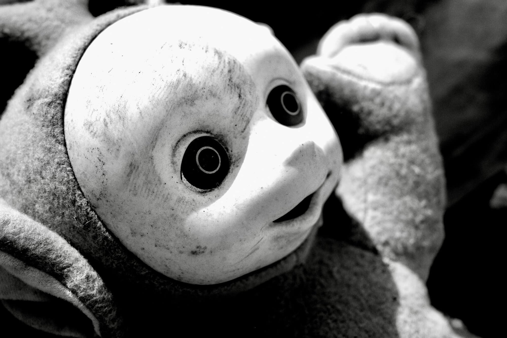
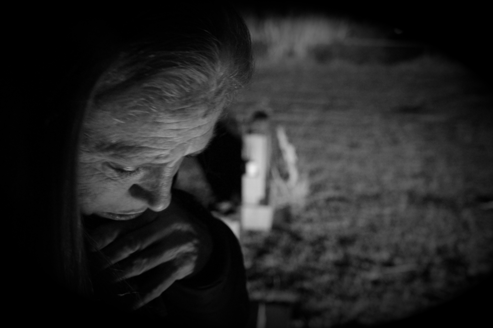

Why were so many people so ready, so willing, so eager to believe things for which there was so little evidence?
Here's an observation.
Evidence-based medicine has been shoved down our throats for the last 30 years, and with good reason. Along comes the coronavirus pandemic, and all that goes out the window. The mantra has become “We don't need no stinkin' evidence. We'll let you know when it's safe to step outside. We're the experts you've always wanted. More smiles please—we've told you what to think.”
Make of it what you will.
Where there is fear and uncertainty on a daily basis, it's easy to get caught up in the moment, to lose sight of what ordinarily makes sense, to turn off the BS meter. The coronavirus pandemic is no exception.
I can hear them already.
On cue a chorus of voices fills the air lamenting their lack of credentials.
“I'm not a doctor.”
You don't have to be.
Let's take a step back and consider the situation in ways that don't require expertise in virology.
I.
If taken at face value, this sort of thing doesn't happen every day—or every decade. Given the hype, it's as if flying saucers suddenly appeared over the nation's capitol. It's outrageous to think that somebody somewhere has a drawer just waiting to be opened with a folder just waiting to be pulled out containing a plan just waiting to be put into action. There isn't. They're winging it. At best they will make best guesses. More likely their guesses will be tempered by the need to accommodate special interests and entrenched positions. In other words, it's business—and politics—as usual.
If taken at face value.
Perception is reality—for many at least, and a lot depends on that. If the stakes are as high as they say they are, the powers that be have to look like they're taking decisive action, no matter what they privately believe or have been briefed. Leaders, elected and otherwise, must seem responsive, competent, and caring. Persuasive talking heads that exude authority fill the screens. With a topic this specialized, they quickly elevate a guru or messiah for us to fawn over. Optics matter. Increasingly, optics are all there is.
Behind the curtain.
We pay others to know this stuff. The arguments that favor one course of action over another require familiarity with concepts the average American doesn't understand beyond a superficial level. Informed consent becomes impossible when much of the public eschews complexity, ambiguity, and tolerance of risk. All of that is quietly handled for us. Lowest common denominator sound bites fill the air. Trust is the only thing that most of the audience has to go on. Getting a straight story will be difficult and unlikely as there are powerful players involved with reputations to protect and agendas to move forward. The playing field couldn't be more unequal—the man in the street (or the cul de sac) is entirely at the mercy of government agencies and the mass media which together determine what folks see, hear, and believe.
Call it a circus if you like, but circuses are quaint and exist mostly as metaphors these days. Ladies and gentlemen—the Greatest Show on Earth. Three rings and more excitement than—can anybody remember Anything That Mattered™ before coronavirus came along? The media spared no effort in ramping up their coverage of All Things COVID™. Morbid curiosity did the rest. All eyes and ears of the audience belong to those in the spotlight. Skeptics are told to stay in their seats. Cynics are told to get out entirely. This circus takes place in your living room, everywhere in fact as long as you've got WiFi or a cell signal. The saturation is complete. You can't turn it off, and you can't go outside for a smoke.
The word unprecedented has been thrown around a lot lately.
Want unprecedented?
The circus takes a break. The music dies. The lights come up. The MC addresses the crowd in a normal tone of voice for once. The clowns pull off their wigs and fake noses. The show isn't over, but the put on is put away for a while. Short of that, everyone is doing exactly what he or she was hired to do, what he or she does best. If anything, they're doubling down.
Want unprecedented?
The experts shrug their shoulders and admit their pronouncements are a charitable charade that reassures. Remember their abundance of caution routines? The politicians think past the next election cycle and their status as the tools of special interests. The media call everyone's bluff, forgo their role as consensus builders, and ask hardball questions—not just Who Knew What When but frank talk about the evidence—elusive, compelling, or otherwise—that supports the sort of responses being handed down. The audience looks up from their smart phones long enough to ask whatever happened to investigative journalism?
French social observer—and counterrevolutionary—Joseph de Maistre remarked, “Every nation gets the government it deserves.” It also gets the media, institutions, and policies it deserves, because it—or rather its citizens—don't insist on anything else, at least not enough of them do to make a difference. Whom shall we release? Barabbas? Sure. Why not?
Want unprecedented?
The audience puts down their smart phones, stands up, and shouts, “We are not children. We don't need reassurance. We can understand complex topics. We can choose what's best for us.”
Ain't gonna happen.
At what point do we become accomplices in whatever story is concocted for us to consume if we are unwilling to alter our penchant for consumption? They cater to us, sure, but all they ever did was sell us what we had our hearts set on buying. We consent to be deceived.
The word for today is “worldview.” Everybody's got one. You can learn a lot about people by looking at what they take for granted, what they assume to be true. You can get a pretty good idea how far they can be pushed and in which direction, what promises they're likely to believe, how much treasure they're willing to give up on whatever trinket is dangled before their eyes.
Challenge their worldview and watch their smiles fade and knives come out.
You can't outrun a virus. This is unthinkable to modern Americans who no longer recognize the existence of limits or absolutes and have little patience with fools who do. What do you mean I can't depend on the government, major corporations, and technology to tell the truth, fix the problem, and protect me and what's mine? That's how we do things around here. Where have you been? What's wrong with you? What do you mean I can't get what I want six ways to Sunday?
You can't outrun a virus, but you can sure put on quite a show trying. What they gave us was a steady stream of directives that distracts, desensitizes, and dissuades the audience from critically examining the reasoning behind them. It's a one way street, and push-back isn't part of their business plan. Packaged as up-to-the-minute information about a once-in-a-lifetime crisis, it looks and feels like news but functions like entertainment. Watch how we lap it up. No surprise—that's what the media is best at. That's what the audience has come to expect. It doesn't matter what they say so long as they say something we can cling to because it gives us hope—until they say the next thing. Shame on them for managing our perceptions so thoroughly. Shame on us for being so easy to manipulate.
II.
Climb a metaphorical mountain—take the birds-eye view—and something becomes clear.
This is not about a virus or a vaccine.
This is about 1) what folks believe is true about the world they live in, 2) where they get their information from, and 3) how far they are willing to step outside that bubble in search of something else.
For a wide enough swath of the population, the answers are 1) what they're told, 2) from approved sources, and 3) not very far at all. And the saddest thing of all is how many don't deny but rather embrace it. The demoralization is complete.
This is about encouraging fear and mobilizing that fear in an election year by partisan interests that pretended they were anything but. Kudos to the media for presenting information in ways that maximized the sense of vulnerability. Fear is the ultimate infectious agent. Just as one can't outrun a virus, one can't outrun fear either. Or filter it out with a mask or wash it away with alcohol infused gel. Those rituals only reinforce the stranglehold it currently enjoys on our psyche.
This is about personalizing a crisis in ways intended to maximize a desired response. Global warming can't begin to compete with The End of the World™ flowing through our veins. We'll do anything—ANYTHING—to save ourselves even if that means throwing away everything we worked for, everything that mattered.
This is about out and out manipulation. First they promoted panic; then they promised relief. Just Do It™. Don't worry if you didn't catch it all the first time. We'll keep repeating it until you do. Shame and blame work wonders, by the way. This is about keeping us convinced that policies and practices which destroy livelihoods and worsen health somehow make us better off. This is about making politicians, institutions, and commercial interests look effective, while civil authority becomes more intrusive than ever and certain industries enjoy a windfall. This is about rewarding people for obedience and devotion to the saints and saviors of this world.
This is about the dumbing down of American society over several generations. One is not allowed to ask intelligent questions anymore for to do so risks being labeled a believer of this or a denier of that, an extremist, by those who won't bother to ask those questions, can't bring themselves to try, or just can't. This is about pitting a complacent majority against their more skeptical or inquisitive neighbors.
This is about the gullibility and fallibility that everyone possesses but rarely owns up to. Most are quick to see these qualities in others but loathe to see the same things in themselves. Mass movements depend on that. There's always a “they” who are ignorant, misled, or up to no good and a “we” who are enlightened. With righteous indignation each side imagines the worst and desires to convert—or devour—the other. What both sides have in common—hubris, arrogance, denial—lives on to see another day.
This is a litmus test of loyalty to familiar institutions that monopolize daily life for most Americans—media outlets, corporations, civil authorities and the way of life that revolves around them—increasingly backed up by painful consequences for doubt, denial, and disobedience on the part of those who fail it. This is a test of our readiness, willingness, and eagerness to conform when we're afraid, to suspend disbelief, and to refuse to buck the crowd. This is a test of our willingness to turn against and attack peers, neighbors, even family when they believe things not sanctioned by the authorities and delivered by their propaganda arm. If that can't be seen as tearing apart the fabric of society, what can?
Medieval church censors turn green with envy. Self censorship. Speech codes. Criminalization of utterances. Twenty-first century heresy and apostasy. A protection racket that ensures that those who wholeheartedly bought into the coronavirus story never have to face the enormity of their decision.
Is there a rabbit hole large enough and long enough to accommodate the throng? The paths diverged in the woods some time ago. The recruited, the invested, are now legion. Will there be anyone left to deprogram them? Will anyone be forgiving enough to try? With this much face to save, this much crow to eat, is there anything persuasive enough to convince them that they made a mistake? After all, this isn't about a football game or a scandal in the Enquirer. This is about different versions of reality.
Pick your doomsday scenario. We've got plenty going round.
It's tempting but incorrect to call this a descent into mass psychosis. This is NOT about folks who can't discern what is real amidst their perceptions and beliefs. This is about folks CHOOSING to believe what is real based on limited familiarity with a complex topic, a predisposition to tolerate or even embrace manipulation as part of everyday life, the obsolescence of critical thinking, overt pressure and outright design on the part of those who hold and withhold information, and relentless parroting of themes by those trained and paid to speak to us, to shape our ideas and actions.
Are their precedents? Think recruitment of mass political movements, religious revivals, and fads in the marketplace. Coronamania. On steroids. This level of frenzy is seen in wartime when dissent is crushed and all organs of society are recruited for one purpose. Some, of course, are true believers—others followers who harbor doubts but cloak themselves in the garb of piety because they've made a calculation that it's safer and easier that way. None of this makes any of them mentally ill—they're just human doing what humans do to themselves and each other, and that includes some pretty devastating stuff on occasion. Check out history for more examples of mobs in action.
When the dust settles, who can be held accountable, and how will we hold them so? How long will it take for families torn apart by this lunacy to heal? Will they ever? Or is that some unintended consequence? Divide and conquer. Brother against brother. Another degree of atomization. Will there someday be a coronavirus Truth and Reconciliation Commission? Who will testify and who will tune in to the hearings?
III.
A fertile field in which to plant.
Ripe for conversion.
Why were so many people so ready, so willing, so eager to believe things for which there was so little evidence?
Ask those for whom immanent doom—the climate apocalypse—has been a staple of their diet for decades now. This is old hat for them. They're already long past convinced and have been for years.
What provokes people to such extremes?
Some are in it for a save the world high they can't get anywhere else.
For others the drama is a welcome distraction that gives meaning to their lives.
The rest?
Their Happy Meals™ are at stake.
And more than ever, everything's become a Happy Meal™.
Modern life in a nutshell.
The fusion of news and entertainment. The normalization of pornography and violence. The loss of temperance as a goal that we admire and strive for. The elevation of immediate satisfaction above all else. The rejection of inquisitiveness and removal of room for doubt. The willingness to be seduced on all levels and in all areas. The elimination of personal responsibility. The eschewing of growth and maturity as solutions to meeting the challenges of life. The disappearing of adulthood.
The digital narcosis that never wears off.
That's a charitable way of putting it. A more cynical view might call it a fix.
Give us back our Happy Meals™.
Give us our next fix.
Tell us what to believe, where to stand, what to give up, how to assess risk and benefits, how to feel about the unknown, whom to trust (hint—not ourselves), how to treat others who have reached different conclusions, in short how to tear apart the fabric of society.
There's one more thing, and it speaks volumes.
Folks didn't need much convincing to run headlong into the abyss.
Why?
Here's an answer.
The audience doesn't have to leave their seats to be a part of the show. Their needs and wants and all that goes into meeting them—THAT is the show.
This cataclysmic disruption, this tearing apart of the norm, this bleakest, blackest moment in modern history actually agrees with many.
Most won't dare articulate it, but here and there it rises to the surface.
A deep appeal or dark allure fuels the quick acceptance of the coronavirus narrative and the stubborn refusal to deviate from it—a welcome sense of relief that the apocalypse has finally arrived. No waiting at register three. Lets get on with it. This beats anything in prime time, in fact it beats anything anybody's said in ages.
Many folks these days proudly consider themselves post-religious even while they espouse religious-like sentiments. Natural catastrophes? “We are being punished for our transgressions by Gaia.” These folks secretly admire and adore what's happened because it vindicates their belief system. We deserved this. We had it coming.
There are as many variations on this theme as there are YouTube channels and folks who follow them.
Pick your doomsday scenario. We've got plenty going round.
They all have something in common.
They provide relief. An exit strategy. Deliverance. A way out.
There's just one thing left to do.
Start over. Wipe the slate clean. Burn this thing to the ground.
To save the world we must first destroy it—or be there, at least, when it goes down in flames. On the sidelines, of course, mask in place and gel in hand. A spectator to the end of history with a ringside seat as the world implodes.
And first in line for whatever comes next.
And then—what?
Did anybody think any of this through? The politicians that started the ball rolling. The media that whipped up the frenzy. They unleashed a cult-like rewriting of everything everybody knew. They played fast and loose with facts, and no one cared. They plumbed the depths of gullibility—and cognitive dissonance—and found that they have no bottom. They rewrote the definitions for the sake of expediency and set unthinkable precedents. No way to suck this genie back into the bottle.
I suspect they were shocked by how much they got away with. How easy it turned out to be—all things considered.
They changed history.
Forever.
It's not like folks are begging for their own execution, but they've sure got everyone clamoring to get on the scaffold. Standing room only.
Doomsday never actually has to happen; it just has to feel like it's about to. Therein lies its power. The darkest of fears triggers the oldest of impulses. The deepest of needs subverts reason, skepticism, and doubt—ushering in a willful blindness and deafness, making the unthinkable not only possible but likely. Somebody save us! We'll do anything you ask.
This was never about a virus or a vaccine. This was about ginning up the mob, prodding the beast that lurks in the shadows, fanning a firestorm that consumes without pity or remorse. This was about the oldest contagion of all—the dark side of human nature where fear elicits conformity and breeds contempt. This was just the latest chapter in a pandemic with neither beginning nor end and one for which there is no inoculation.
Folks didn't need much convincing to run headlong into the abyss.